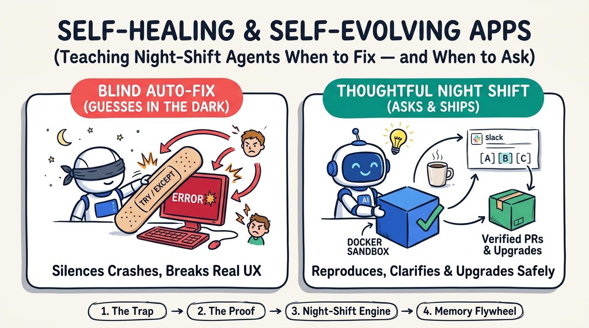
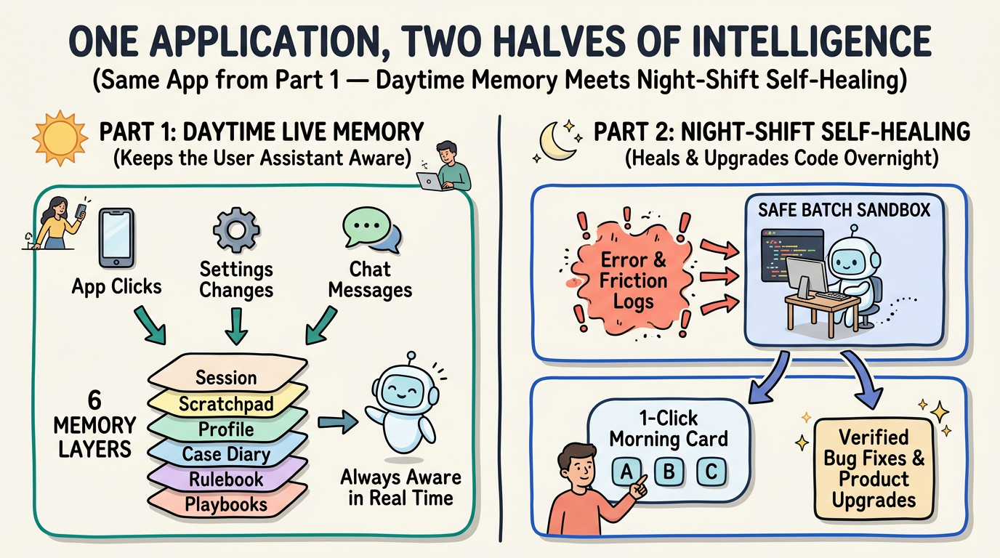
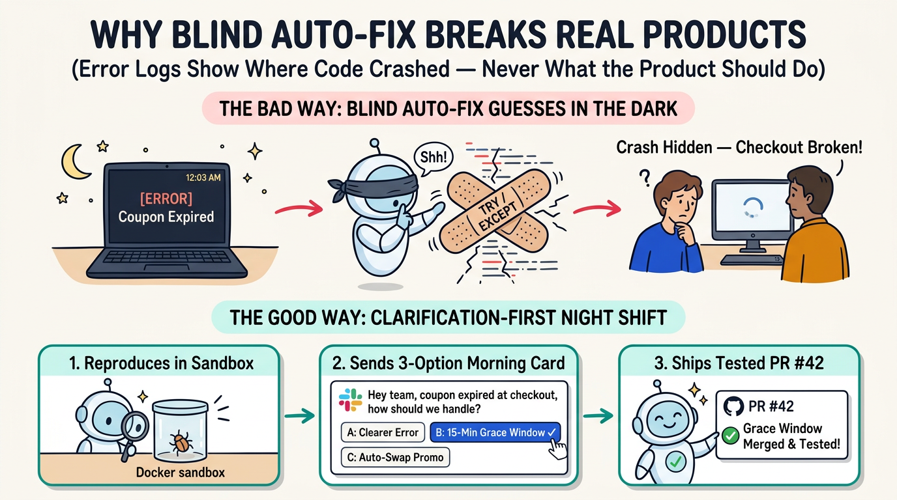
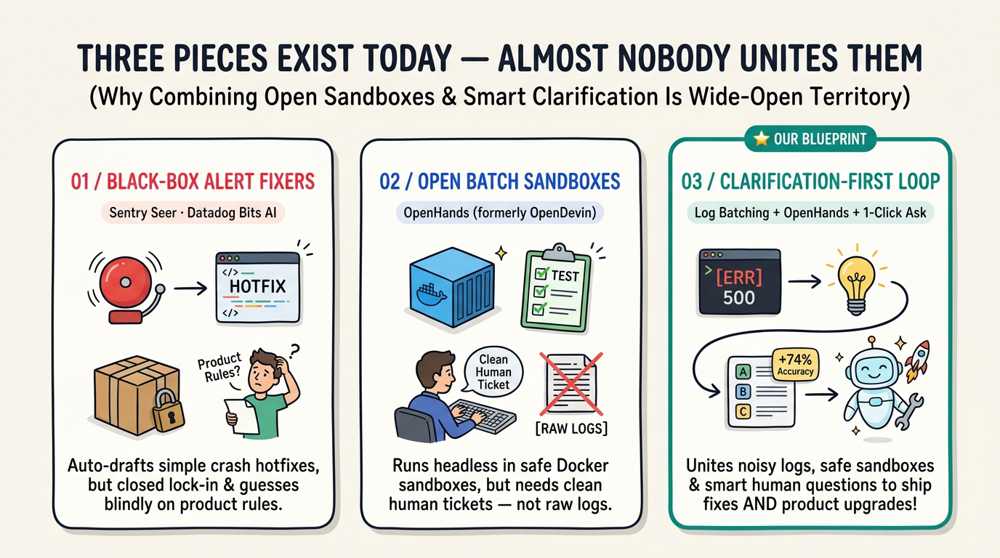
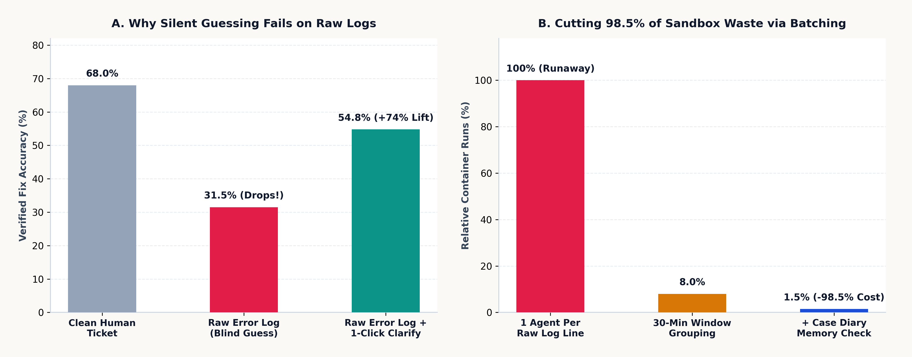
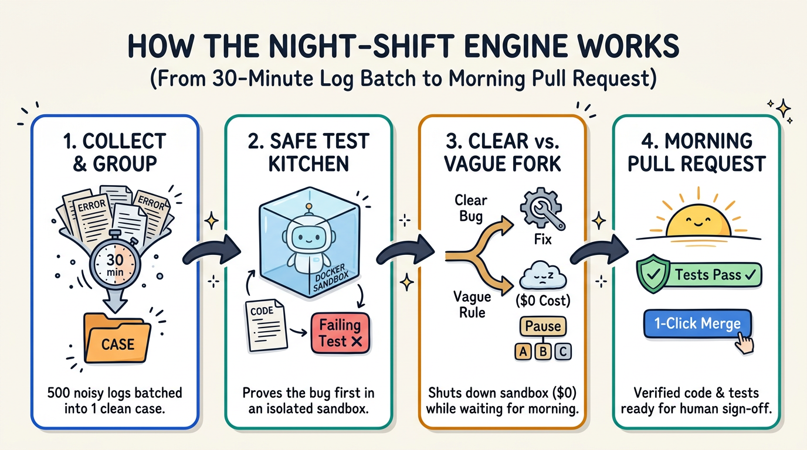
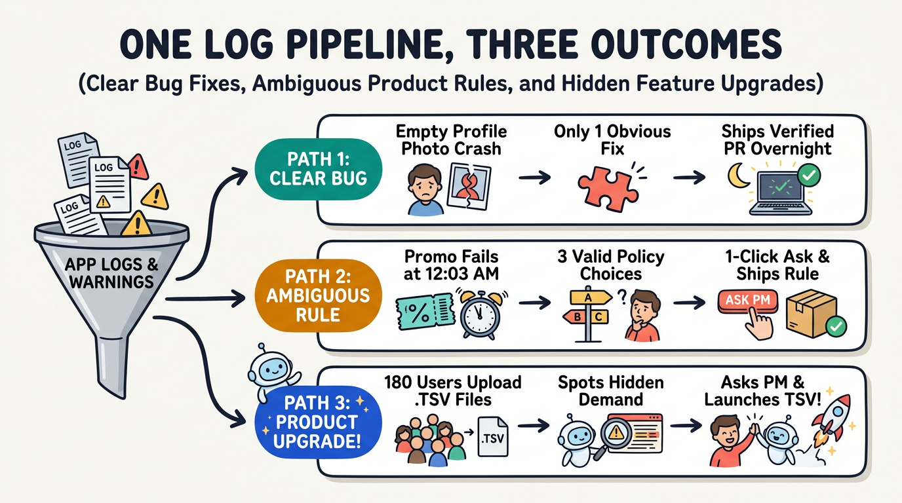
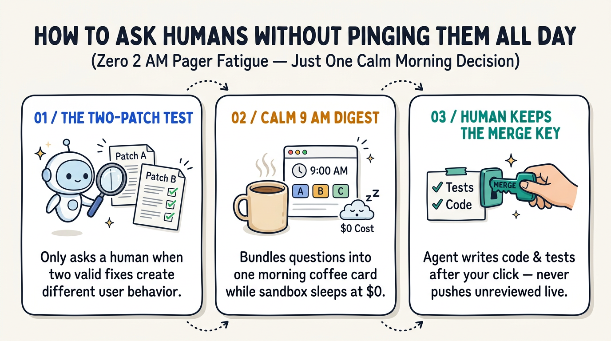
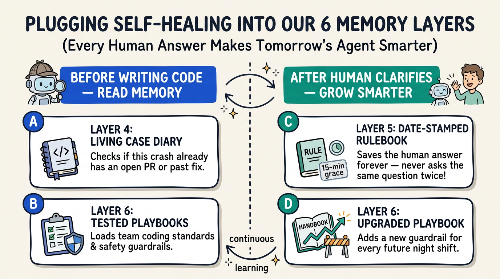
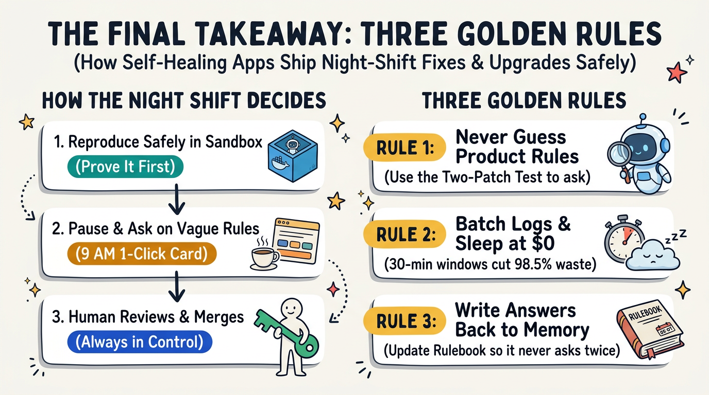

Why Self-Healing Apps Shouldn’t Guess in the Dark: Teaching Night-Shift Coding Agents When to Fix — and When to Ask
Raw error logs tell an autonomous agent where code crashed — never what the product should have done. Here is a complete production blueprint uniting headless OpenHands batch sandboxes, Two-Patch ambiguity detection (+74% fix accuracy), $0 hibernation, and our 6-layer memory flywheel to ship both verified bug fixes and real product upgrades overnight.
- Batch & Deduplicate First: 30-minute stack-trace windows + Layer 4 Case Diary checks slash runaway sandbox runs by 98.5%.
- Reproduce Before Thinking: Headless OpenHands Docker containers prove every bug with a failing test before proposing a single line of fix.
- Detect Ambiguity Mathematically: Using the Two-Patch Test, agents pause at $0 compute cost whenever product rules are unclear, send one calm 9:00 AM 3-button Slack/GitHub card, and lift verified fix accuracy by +74%.
- Go Beyond Crash Hotfixes: The exact same pipeline spots 180 users failing to upload
.TSVfiles into a.CSVimporter—turning warning logs into 1-click product upgrades.

Every engineering leader has watched the same slick demo over the past year: a red production stack trace hits an observability webhook, an autonomous coding agent wakes up, edits three lines of code, and opens a GitHub pull request ninety seconds later. Applause breaks out. Everyone declares operations solved.
Then the team wires that demo to a real production service—and shuts it off within ten days.
Why? Not because frontier coding models can’t read Python or TypeScript stack traces. They are remarkably good at syntax and control flow. Blind self-healing agents fail in real organizations because of a deceptively simple truth: a stack trace tells you where the code exploded, never what business behavior your product team actually wants.
Slapping a silent try / except or null-guard around an unhandled exception makes the red error chart drop to zero—while quietly turning a visible crash into a broken customer experience.
Part I · Series Continuity & The Blind Auto-Fix Trap
One Application, Two Halves of Intelligence
If you read Part 1 (The 6 Layers of Agentic Memory), you already know our running SaaS workspace application. During the day, users click mobile buttons, switch deployment regions in settings, upload workspace files, and redeem promotional upgrades. Streaming those high-signal mutations asynchronously into six lifecycle-governed memory layers dropped stale-state assistant errors from 41.8% down to 0.3%.
Now watch what happens to the exact same application after everyone closes their laptops at 6:00 PM. Traffic keeps flowing. Timezones cross midnight. Edge-case payloads hit older parsers. Users try uploading file formats your importer was never taught to accept. Daytime live memory kept the user-facing assistant aware; now a night-shift batch coding agent turns overnight error and friction logs into verified fixes and proposed enhancements.

The Dirty Secret of Blind Self-Healing: Band-Aid Hallucinations
Walk through one concrete midnight incident to see why naive alert-to-PR bots lose engineering trust overnight. At 12:03 AM, checkout logs spike with [ERROR] CouponExpiredError: promo_code "FALL25" expired at 00:00:00 UTC while shoppers in Tokyo and San Francisco are mid-checkout.
A blind auto-fix bot has one implicit incentive: make the exception disappear and keep existing unit tests green. So it catches CouponExpiredError, returns discount = 0 silently, and opens a pull request claiming "Fixed unhandled coupon crash." The stack trace vanishes—while confused shoppers stare at a spinning checkout screen or silently get overcharged full price.

Look at the bottom half of Figure 3. A clarification-first night-shift agent recognizes something a blind hotfix bot never asks: handling a 12:03 AM expired promo is a product policy choice, not a syntax typo. Should the checkout:
- Option A: Display a clearer inline banner explaining the promo expired at midnight UTC?
- Option B: Honor a 15-minute grace window for carts already in checkout before midnight?
- Option C: Automatically swap in the active fallback welcome promo code?
Every single one of those patches compiles cleanly and passes existing tests. None of them can be deduced from a stack trace alone. Once a product manager clicks Option B over morning coffee, the agent wakes up, implements the 15-minute grace window alongside fresh boundary tests, opens PR #42, and records the new rule in long-term memory so it never has to guess—or ask—again.
Part II · 2025–2026 Landscape & Empirical Proof
Three Pieces Exist Separately Today — Almost Nobody Unites Them
Before designing anything new, a Principal Architect surveys what already exists in production and in frontier research. Across the 2025–2026 ecosystem, three remarkable building blocks have matured in separate silos:

| Category / Platform | Trigger Input | Isolated Reproduction | Ambiguity Handling | Product Upgrades & Memory |
|---|---|---|---|---|
| Sentry Seer & Autofix | Crash stack traces, breadcrumbs & session replay | Cloud-hosted runner (proprietary SaaS) | Assumes crash spec is clear; limited structured PM policy branching | Crash hotfixes only; closed vendor memory |
| Datadog Bits AI Dev Agent | APM 5XX spikes, error logs & monitors | Managed sandbox tightly coupled to Datadog stack | Single-shot root-cause hypothesis → draft PR | Focused on error remediation, not friction-to-feature loops |
| Resolve AI / Traversal | Production alerts, telemetry & traces | Live observability investigation & ops runbooks | Interactive SRE chat triage | Infrastructure mitigation (rollbacks/scaling), not app feature PRs |
| GitHub Copilot Coding Agent / Google Jules | Human-written GitHub issues & clean specs | Async cloud dev containers | Relies on humans writing unambiguous tickets up front | Starts after a human notices friction and writes a ticket |
| OpenHands (formerly OpenDevin; ICLR 2025 & V1 SDK) | Headless REST API / CLI structured tasks | Open-source ephemeral Docker sandboxes + CodeAct Event Stream |
Supports stateful pause/resume natively, but needs an external ambiguity gate | Repo .openhands/microagents/*.md playbooks ready to wire to Layer 6 |
| Clarification-First Night-Shift Loop (This Blueprint) | 30-min batched error + user-friction logs | Headless OpenHands Docker sandbox pinned to deployed git_sha |
Two-Patch Ambiguity Gate → $0 hibernation → 9 AM 3-button card | Ships bug fixes AND feature upgrades; compounds Part 1’s Layers 4, 5 & 6 |
The Quantitative Case: Why Blind Guessing Collapses — and Batching Cuts 98.5% Waste
Recent 2025–2026 software-engineering benchmarks—specifically Ambig-SWE, SWE-DIVE, ClarifyGPT, and CONTRA—exposed a blind spot in traditional leaderboards like SWE-bench Verified. Benchmark datasets hand agents artificially polished, human-curated bug reports. Strip away that hand-holding and feed models underspecified real-world signals (like raw production logs), and frontier models suffer what researchers call the Non-Interactive Default Pitfall: they silently invent assumptions rather than asking for clarity.

- Accuracy collapse without clarification (Panel A): When an agent receives a clean human-written ticket, verified resolution reaches roughly 68.0%. Drop the exact same model onto raw, underspecified error signals and force silent one-shot guessing, and accuracy plunges to 31.5%. Introducing an explicit ambiguity gate with 1–2 targeted multiple-choice questions recovers 54.8%—a +74% relative lift without changing the underlying model weights.
- Eliminating runaway container bills (Panel B): Real incidents never emit one tidy log line; a broken promo check emits 500 identical stack traces inside ten minutes. Triggering one agent container per alert creates a 100% runaway storm. Grouping logs by normalized stack fingerprint over a 30-minute window slashes runs to 8.0%, and checking Part 1’s Layer 4 Living Case Diary to skip already-open pull requests drops active container runs all the way to 1.5% (−98.5% compute waste).
Part III · System Blueprint
Inside the Four-Stage Night-Shift Engine (From Log Batch to Morning PR)
Why build the execution backbone on OpenHands (formerly OpenDevin, published at ICLR 2025 and expanded in the modular OpenHands V1 Software Agent SDK)? Because OpenHands already solved the hardest infrastructure primitives you would otherwise spend six months rebuilding: headless REST/CLI execution, ephemeral Docker sandboxes, repo-local Markdown microagents, context condensers, and an append-only CodeAct Event Stream (ConversationState) that can be paused to disk and resumed hours later with zero lost reasoning context.

Stage 1 — Windowed Log Collector & Canonical Fingerprint Deduplicator
A lightweight cron or queue worker wakes every 15 to 60 minutes (30 minutes is the practical sweet spot). It pulls structured error logs, unhandled exceptions, and repeated 4xx user-friction warnings, strips volatile request IDs and user tokens, and computes a deterministic fingerprint hash from (service, exception_class, top_3_app_frames, route). Before spinning up a single container, it checks Part 1’s Layer 4 Case Diary:
-- Stage 1: Deduplicate 500 noisy log lines into 1 canonical night-shift case
INSERT INTO night_shift_cases
(fingerprint_hash, service, route, sample_count, first_seen_at, last_seen_at, status)
VALUES
(:hash, :service, :route, :batch_count, :window_start, :window_end, 'QUEUED')
ON CONFLICT (fingerprint_hash) DO UPDATE
SET sample_count = night_shift_cases.sample_count + EXCLUDED.sample_count,
last_seen_at = EXCLUDED.last_seen_at
WHERE night_shift_cases.status NOT IN ('PR_OPEN', 'WAITING_CLARIFICATION', 'RESOLVED');
If a fingerprint already has an open pull request or a morning clarification card waiting for human input, the worker simply increments sample_count (giving the PM fresher impact numbers at 9:00 AM!) and exits in 3 milliseconds—never spawning a duplicate sandbox.
Stage 2 — The Safe Test Kitchen ("Reproduce Before Thinking")
For every genuinely new cluster, the orchestrator calls OpenHands’ headless API to boot an isolated, network-restricted Docker container checked out at the exact deployed git_sha from the log metadata. Crucially, the container receives zero production secrets and zero outbound internet access—only the code repository, synthetic test fixtures, scrubbed log payloads, and the team’s .openhands/microagents/*.md playbooks.
Rule #1 inside the sandbox is strict: the agent is forbidden from editing application code until it writes a failing unit or integration test that reproduces the exact logged failure. If the agent cannot reproduce the failure cleanly, it logs an investigation note into the Case Diary and terminates—preventing speculative edits built on faulty hypotheses.
Stage 3 — The Clear vs. Vague Fork & Zero-Cost Hibernation
Once a failing reproduction test proves the bug is real, the agent passes through the Ambiguity Gate (detailed in Part V below). Clear deterministic defects proceed straight to patching and verification. The moment the agent detects two or more conflicting valid product behaviors—or spots a recurring user-friction pattern that looks like a missing feature—it serializes its OpenHands ConversationState to encrypted object storage, emits a compact clarification payload, and destroys the Docker container immediately:
{
"case_id": "case_2026_11_28_coupon_midnight",
"deployed_sha": "a94f21c",
"reproduction_test": "tests/checkout/test_promo_boundary.py::test_midnight_utc_expiry",
"state_checkpoint_uri": "s3://night-shift-state/case_coupon_midnight/events.jsonl",
"sandbox_status": "HIBERNATED_ZERO_COST",
"clarification_options": [
{"id": "A", "label": "Clearer inline banner explaining UTC cutoff"},
{"id": "B", "label": "Honor 15-min grace window for active checkout carts"},
{"id": "C", "label": "Auto-swap to active fallback welcome promo"}
]
}Stage 4 — Wake-Up, Green Verification & Human-Owned Merge Key
When a human clicks Option B at 9:07 AM, the webhook triggers a fresh OpenHands worker, restores events.jsonl in seconds, injects the single human decision as the next event in the stream, implements the chosen behavior, verifies both the new boundary test and the full regression suite pass green, and opens a crisp GitHub pull request referencing the exact Slack/GitHub approval record. The night-shift agent never merges to main on its own.
Part IV · From Self-Healing to Self-Evolving
Beyond Crash Hotfixes: One Log Pipeline, Three Outcomes
Most engineering teams stop thinking at self-healing—patching crashes automatically. Yet once you batch and analyze structured application logs every thirty minutes, you unlock something far more valuable: a self-evolving product loop.
Production logs don’t only record 500 Internal Server Error crashes. They quietly record thousands of 400 and 422 validation warnings showing exactly where real users are hitting friction against your product’s boundaries—requests that rarely make it into formal support tickets or Jira backlogs.

Only 1 Obvious Fix -> Ships Verified PR Overnight), Path 2 Ambiguous Rule (Promo Fails at 12:03 AM -> 3 Valid Policy Choices -> 1-Click Ask and Ships Rule), and Path 3 Product Upgrade (180 Users Upload .TSV Files -> Spots Hidden Demand -> Asks PM and Launches TSV Support)." />.TSV files into a .CSV importer, the exact same night-shift agent turns silent friction logs into a 1-click product upgrade proposal.
| Triage Path | Concrete Example | Signal Type | Sandbox & Clarification Behavior | Final Artifact |
|---|---|---|---|---|
| Path 1 · Clear Deterministic Bug | AttributeError when rendering empty optional profile photo |
Unhandled 5xx crash; single valid specification |
Reproduces failing test → passes Two-Patch agreement check → finishes autonomously overnight | Ready-to-Review Bug-Fix PR waiting at 9:00 AM |
| Path 2 · Ambiguous Product Rule | Promo code fails 3 minutes past midnight UTC for active carts | 5xx or business-rule error with multiple valid UX behaviors |
Reproduces bug → Two-Patch Test diverges → hibernates at $0 → sends 9 AM 3-button card | Policy-Aligned PR #42 + permanent Layer 5 Rulebook entry |
| Path 3 · Friction-to-Upgrade | 180 users rejected uploading .TSV files into .CSV importer |
High-volume 4xx validation warnings (no crash, real user pain!) |
Clusters user demand → estimates tiny diff scope → hibernates at $0 → asks PM: "Add TSV support?" | Tested Feature-Upgrade PR + unit fixtures shipped in 1 click |
422 UnsupportedMediaType: expected .csv, got .tsv because the server didn’t crash—the validation guard worked as coded! Product managers never see the raw log line. By letting the 30-minute batch collector track high-frequency validation warnings alongside crash traces, your night-shift agent hands the PM a verified insight every week: "180 workspace users tried uploading tab-separated .TSV exports this week. Adding delimiter auto-detection touches 2 files and 18 lines—want me to build and test it?"
Part V · Human-in-the-Loop Engineering
How to Ask Humans Smart Questions Without Notification Fatigue
The fastest way to kill a human-in-the-loop architecture is to ping engineers on Slack at 2:15 AM—or spam a product manager with twenty vague questions every morning. Making clarification loops genuinely loved by engineering and product teams requires three disciplined UX invariants:

1. Objective Ambiguity Detection: The Two-Patch Test
Asking a language model "On a scale of 1 to 10, how sure are you about this fix?" fails in practice—models routinely report 95% confidence while hallucinating a product policy. Instead, borrow the clever differential trick demonstrated in ClarifyGPT and CONTRA:
- Inside the sandbox, after the failing reproduction test is locked in, ask the agent to synthesize two candidate fixes independently (using distinct reasoning framings or slight sampling diversity) that both make the failing test and existing suite pass.
- Generate a small set of boundary inputs around the failure and run Patch A and Patch B side by side.
- If both patches produce identical outputs across all boundary inputs: the fix is behaviorally unambiguous (Path 1) — open the PR directly!
- If Patch A and Patch B both pass tests yet return different user-visible outputs (for instance, returning HTTP
400with a clearer banner vs. honoring a 15-minute grace window): you have provable behavioral ambiguity — and those exact behavioral differences become Buttons A and B on the morning card!
# Simplified Two-Patch Ambiguity Gate (inspired by ClarifyGPT / CONTRA)
def evaluate_ambiguity(sandbox, failing_test, boundary_inputs):
patch_a = sandbox.propose_verified_patch(strategy="strict_validation")
patch_b = sandbox.propose_verified_patch(strategy="graceful_ux_fallback")
outputs_a = sandbox.run_probe_inputs(patch_a, boundary_inputs)
outputs_b = sandbox.run_probe_inputs(patch_b, boundary_inputs)
if outputs_a == outputs_b:
return Decision(mode="CLEAR_BUG", winning_patch=patch_a)
# Provable behavioral divergence -> summarize concrete differences as A / B / C!
return Decision(
mode="HIBERNATE_AND_ASK",
options=summarize_behavior_diff(outputs_a, outputs_b),
)2. One Calm 9:00 AM Coffee Digest (Capped at Top 5 Items)
Unless a critical P0 outage is actively firing (which belongs to your existing on-call pager, never a night-shift PR bot), overnight clarifications wait silently until 9:00 AM local team time. Every question arrives as one crisp, scannable card ranked by affected user count—never an open-ended essay prompt:
CouponExpiredError on POST /checkout/apply-promo (187 shoppers affected between 00:00–00:14 UTC).Verified Root Cause: Reproduced in
test_midnight_utc_expiry at commit a94f21c. Two valid patches pass CI but change shopper UX. Which rule should we ship and save to the Rulebook?
3. The Human Always Keeps the Merge Key
Clicking Option B authorizes the agent to wake up, write the code and boundary tests, and open a clean pull request—not to deploy directly to production. Keeping a human reviewer on the final GitHub Merge button gives engineering teams complete confidence to turn the night shift on across real services from week one.
Part VI · The Memory + Self-Healing Flywheel
Plugging Self-Healing Directly Into Our 6 Memory Layers
Here is where Part 1 and Part 2 snap together into a compounding system. A standalone coding agent has goldfish memory: ask it about a midnight coupon issue this Tuesday, and if a similar promo bug fires next month on a sibling checkout endpoint, it will wake up and ask your product manager the exact same question all over again.
Wiring our night-shift coding agent directly into Layers 4, 5, and 6 from Part 1 closes the feedback loop completely:

- Before Coding — Read Layer 4 (Living Case Diary): One canonical keyed record per stack fingerprint prevents duplicate containers and shows the agent whether a closely related fix was recently merged or rolled back.
- Before Coding — Read Layer 6 (Tested Playbooks /
.openhands/microagents/*.md): Loads house coding conventions, forbidden patterns (such as "never silence checkout exceptions with bare try/except"), and test-fixture locations straight into the OpenHands sandbox. - After Clarification & Merge — Write Layer 5 (Bi-Temporal Semantic Rulebook): The moment PR #42 merges, an atomic bi-temporal transaction records the approved policy (
promo_midnight_grace_minutes = 15,valid_from = 2026-11-28,valid_to = NULL). The next time any billing or checkout agent touches promo expiration—daytime assistant or night-shift mechanic—it already knows the official product rule and never asks twice! - After Merge — Propose Layer 6 Playbook Upgrade: Recurring fixes graduate offline into versioned microagent rules (
playbook-v2.5), validated against historical regression suites before promotion behind a 1-second rollback pointer.
End-to-End Walkthrough · Midnight to 9:12 AM
Tracing One Night Shift Minute-by-Minute (Two Real Signals, Zero Pager Noise)
To see how every component cooperates without race conditions, runaway bills, or 2 AM alerts, trace one real overnight window across our SaaS workspace app:
- 00:03:11 UTC — Production Signals Accumulate Quietly: Between 00:00 and 00:14 UTC, 187 shoppers hit
CouponExpiredErroron checkout. Meanwhile, across Asia-Pacific morning hours, 180 users trigger422 UnsupportedMediaTypewarnings trying to upload.TSVfiles into the workspace.CSVimporter. Zero engineers are paged. - 00:30:00 UTC — 30-Minute Batch Collector Fires: The collector normalizes all 367 raw log lines into exactly 2 canonical fingerprints. A 3-millisecond lookup against Layer 4 (Living Case Diary) confirms neither fingerprint has an open PR or pending clarification card.
- 00:31:05 UTC — Safe Test Kitchen Boots: Two headless OpenHands Docker containers spin up at exact deployed commit
a94f21c, mounting repo-local Layer 6 Playbooks with zero production secrets and zero outbound internet access. - 00:33:40 UTC — Reproduction + Two-Patch Gate: Container #1 writes failing test
test_midnight_utc_expiry, then runs the Two-Patch Test—proving that strict expiry banner and 15-minute grace window both pass existing CI yet diverge on user behavior. Container #2 confirms.TSVauto-detection is a clean 18-line importer enhancement. - 00:34:15 UTC — Zero-Cost Hibernation: Both sandboxes serialize their append-only
CodeActEvent Streams to object storage, mark Layer 4 status asWAITING_CLARIFICATION, and destroy their containers completely ($0.00/hr while everyone sleeps). - 09:00:00 UTC — Calm Morning Digest Lands in Slack: One tidy card presents the 2 highest-impact overnight items—ranked by affected users—with 1-click decision buttons.
- 09:07:42 UTC — Two Clicks Over Morning Coffee: The PM clicks Option B (15-Min Grace Window) on checkout and Approve TSV Support on the importer.
- 09:10:15 UTC — Resume, Verify & Open Green PRs: Fresh OpenHands workers rehydrate both event streams, write the approved logic plus boundary unit tests, pass full CI green, and open PR #42 (Grace Window) and PR #43 (TSV Auto-Detection).
- 09:12:00 UTC — Human Turns the Merge Key & Memory Compounds: An engineer reviews the concise diffs and merges both PRs. Layer 4 updates both cases in place to
RESOLVED; Layer 5 atomically stamps the 15-minute grace rule as active from today; Layer 6 queues a new microagent check ensuring future promo endpoints always respect the active grace rule.
Part VII · Production Hardening
Production Engineering Checklist: Guardrails, Failure Modes & 90-Day Rollout
Shipping a self-healing loop into a real codebase requires treating autonomous coding sandboxes with the same operational discipline as production deployment pipelines. Build these budgets, invariants, and dashboards in from day one.
- Batch Collection Cadence: 30-minute rolling windows with fingerprint grouping; maximum 3 concurrent Docker sandboxes per repository so traffic spikes never multiply cloud bills.
- Per-Case Sandbox Cap: Hard 8-minute wall-clock timeout and strict token ceiling per OpenHands container before graceful checkpointing or abort.
- Zero-Cost Hibernation Window: Destroy idle containers immediately upon emitting a clarification card; auto-expire unanswered hibernated checkpoints after 72 hours.
- Human Attention Budget: Maximum 1 morning digest per channel per day, hard-capped at the top 5 highest-impact cases ranked by affected users.
- 1. Silent Band-Aid Fixes Masking Real UX Bugs: Prevented by forbidding edits before a failing reproduction test exists, paired with the Two-Patch behavioral divergence gate and a Layer 6 rule blocking bare exception swallowing.
- 2. Container Storms During Outage Spikes: Prevented by 30-minute stack-trace fingerprinting, Layer 4 dedup checks, circuit-breaker pausing when 5XX rates exceed 5%, and a hard per-repo container concurrency cap.
- 3. Prompt Injection Hidden Inside User-Controlled Log Fields: Prevented by scrubbing/redacting free-form user strings before log ingestion, wrapping log excerpts as untrusted data blocks, and running OpenHands containers with zero production credentials and zero egress network access.
- 4. Duplicate PR Spam & Stale Merge Conflicts: Prevented by canonical
fingerprint_hashupserts in Layer 4 (never opening a second PR while one is active) and rebasing onto latestmaincleanly before pushing a woken-up branch. - 5. Clarification Fatigue & Asking the Same Question Twice: Prevented by capping daily digests at 5 cards and committing every resolved human choice atomically into Layer 5’s Date-Stamped Rulebook so future agents consult memory before asking.
- First-Pass PR Merge Rate: Percentage of night-shift pull requests merged with minimal or zero manual rework (healthy target: >75% on Path 1 bugs; >85% after clarification).
- Container Deduplication Ratio: Share of raw error/warning log lines collapsed before spinning up a sandbox (target: >98%).
- Ambiguity Catch Precision: Share of morning clarification cards where humans confirm a real product decision was needed (rather than clicking "obvious bug").
- Repeat-Question Rate: Percentage of clarification cards asking a policy question already answered previously (target: trending cleanly toward 0% as Layer 5 fills!).
- Friction-to-Feature Conversion Rate: Number of Path 3 warning-log proposals approved by PMs and shipped into production each month—the ultimate metric that your app is truly self-evolving.
Phase 2 (Days 31–60 · Path 1 Fixes + 9 AM Clarification Cards): Turn on Path 1 draft PRs for unambiguous bugs, activate the Two-Patch Test with $0 hibernation + 9:00 AM Slack/GitHub cards, and connect read/write sync with Part 1’s Layers 4 and 5.
Phase 3 (Days 61–90 · Self-Evolving Friction Loops + Layer 6 Playbooks): Add high-frequency
4xx user-friction clustering (Path 3 product upgrades) and graduate recurring night-shift lessons into sandbox-verified Layer 6 microagent playbooks.
Part VIII · The Final Takeaway
The Final Takeaway: Three Golden Rules of Self-Healing Apps

2. Pause and Ask on Vague Rules via 9 AM 1-Click Card -> 3. Human Reviews and Merges); Right column shows Three Golden Rules (Rule 1: Never Guess Product Rules, Rule 2: Batch Logs and Sleep at $0, Rule 3: Write Answers Back to Memory)." />The Principal Architect’s Bottom Line — Three Golden Rules
- Never guess product rules from stack traces. Require a failing reproduction test first, then run the Two-Patch Test—whenever two valid fixes create different user behavior, pause and hand the team crisp A/B/C buttons at 9:00 AM.
- Batch noisy logs and sleep at $0 compute cost. 30-minute fingerprint windows plus Layer 4 Case Diary checks cut 98.5% of sandbox waste, while OpenHands Event Stream hibernation lets containers shut down cleanly until a human clicks.
- Write every human answer back to memory. Closing the loop into Part 1’s Date-Stamped Rulebook (Layer 5) and Tested Playbooks (Layer 6) ensures your night-shift mechanic compounds intelligence—healing crashes faster and spotting hidden product upgrades without ever asking the same question twice.
Put Part 1 and Part 2 together, and the entire shape of modern software changes. By day, live state-transition streams keep your user-facing agent grounded in reality across six governed memory layers. By night, a calm batch coding agent turns production crashes into verified pull requests, asks thoughtful morning questions when business rules diverge, and turns silent user-friction logs into tomorrow’s roadmap.
The goal was never to take humans out of software engineering. It is to stop wasting human judgment on 2 AM noise—so one clear click over morning coffee ships safer code, smarter memory, and a product that genuinely learns from its users.
Key Research & Systems References (2024–2026)
- OpenHands (formerly OpenDevin): X. Wang et al., OpenHands: An Open Platform for AI Software Developers as Generalist Agents (ICLR 2025, arXiv:2407.16741) & The OpenHands Software Agent SDK (arXiv:2511.03690).
- Ambiguity & Interactive Clarification Benchmarks: Ambig-SWE, SWE-DIVE, ClarifyGPT (Mu et al., FSE 2024 — differential patch ambiguity detection), and CONTRA (2025–2026 studies showing +74% relative resolution lift from targeted clarification on underspecified software tasks).
- Industry Observability & Background Agent Landscape: Sentry Seer & Autofix, Datadog Bits AI Dev Agent, Resolve AI, GitHub Copilot Coding Agent, and Google Jules.
- Series Part 1: Memory Is Not Storage — It Is Lifecycle Governance: The 6 Layers of Agentic Memory (companion architecture for Layers 1–6 and silent state-transition streams).